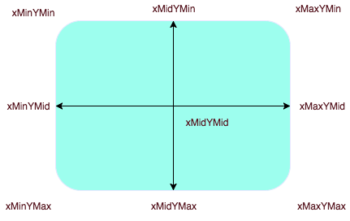

目录： svg元素 viewBox可视窗口 preserveAspectRatio 内置属性 矩形-rect 圆-circle 椭圆-ellipse 直线-line 折线-polyline 多边形-polygon 路径-path 文本和超链接-text/a 渐变-linearGradient/radialGradient 定义、分组和引用-defs/symbol/g/use 裁剪-clipPath 图片-image和线段始末标记-marker 填充(笔刷)-pattern 滤镜(模糊/投影)-filter 遮罩/蒙版-mask 变换-transform SVG动画 变形动画 运动(路径)动画 线条动画
viewport为svg物理窗口，即svg的实际大小(默认大小，或通过width、height属性，或css样式设置的大小)。 viewport与viewBox的关系就像手机查看一张照片(假设照片是一张拼接了很多小照片的大照片)时屏幕与里面一张小照片的关系， 屏幕就是viewport，大小是确定的；屏幕中的内容就是整个绘图空间，大小可无限大，只是没在viewport可视区中的部分就看不到而已；而我们想要着重查看的照片上的某个区域就是viewBox(某张小照片)， 着重查看的区域宽高比例不一定与屏幕宽高比例一样(很多时候都不一样)，这时将这个小照片部分放大到某边与屏幕对应边一样大，这时根据preserveAspectRatio的设定不动表现就有所不同。 可能整个小照片都能看到且屏幕可能还有剩余区域能看到部分其他小照片；也可能一边撑满屏幕而另一边已经超出屏幕，此时该小照片都看不完整，就更不用说该小照片以外的部分了。 preserveAspectRatio属性中第二个参数的值表现就类似于background-size的表现，meet值类似contain将内容最大化能在容器中放下，slice值类似cover将内容撑满整个容器。 不管是meet还是slice，选定区域都是等比例缩放的，但preserveAspectRatio属性表示对齐方式的第一个参数也会影响viewBox左上角在viewport中的对齐位置。 若将preserveAspectRatio设置为`none`，则宽高比就会进行拉伸，类似`background-size:100% 100%`的效果，此时`viewBox`中的值可以看作是viewport的比例尺。 换种理解方式也就是从画布中(注意是画布中，不是viewport中)按`viewBox`截取一块再按`preserveAspectRatio`的设定模式放大或缩小到适合`viewport`的大小并与其对齐， `viewBox`的目的是将画布中想重点查看或想实际看到的区域放大或缩小到`viewport`物理窗口中，放大就是将画布上一小块区域扩展到整个屏幕重点查看，而缩小就是能将画布上屏幕外的内容也收缩到屏幕内查看。
xmlns="http://www.w3.org/2000/svg" 为svg命名空间
version="1.1" 版本
baseProfile="full" 特性描述了作者认为正确渲染内容所需要的最小的SVG语言概述，四个可选值：none(无，默认)|full(适用于PC)|basic(适用于PAD)|tiny(适用于手机)
width="宽度" 可选，可带单位，不带单位则默认为px，优先级低于css样式，svg内部子元素上的尺寸属性也可带单位(若svg上设置了viewBox则不能带单位)
height="高度" 可选，可带单位，不带单位则默认为px，优先级低于css样式，svg内部子元素上的尺寸属性也可带单位(若svg上设置了viewBox则不能带单位)
svg元素宽高代表了其物理窗口 viewport 大小，没有任何宽高设置时，svg与其它替换元素(如iframe)一样默认宽高为300*150
viewBox="x y width height" 设置可视窗口(重点查看的画布区域)，值分别为“起点横坐标，起点纵坐标，窗口宽度，窗口高度”，一般前两个值都是0(即从左上角默认原点开始)，不设置viewBox时，默认就是viewport窗口。
viewBox就像截图时我们选中的区域(只不过可截取的范围是整个画布而不仅仅是viewport可视区)，截取下的部分再等比例缩放使至少一边撑满整个viewport(至于是缩放到完全包含在viewport中还是完全铺满超出部分被裁剪就决定于preserveAspectRatio属性)
并不是说只显示viewBox设置的区域，而是以该区域缩放后的大小来根据模式适应viewport，实际缩放的还是整个viewport中的内容，只是整个内容缩放后可能有的内容已经超出viewport而不可见，可能将viewport外的内容缩小拉回了可视区内(viewBox的范围超出viewport时)
preserveAspectRatio不指定时默认为"xMinYMin meet"，这里设置为"xMinYMin meet"方便查看viewBox区域。
preserveAspectRatio="align [meet|slice]" 规定viewBox可视窗口在viewport中的对齐和缩放平铺方式，align为对齐方式，第二个参数为包含撑满还是平铺撑满模式(类似background-size属性的contain与cover关系)，默认值为"xMidYMid meet"；
除此之外，preserveAspectRatio还有个单独值“none”，表示viewBox的宽高都拉伸为viewport的宽高，这可能导致图形变形；
rateX = viewport_width/viewBox_width；rateY = viewport_height/viewBox_height；rateX、rateY分别为x方向和y方向的缩放比例
meet：宽高都按rateX、rateY中较小的缩放
slice：宽高都按rateX、rateY中较大的缩放
none：宽高分别按rateX、rateY缩放
align由x和y两个方向合并而成，且其各有三个值选择：
x方向： y方向(注意Y大写)：
xMin YMin
xMid YMid
xMax YMax
Min、Mid、Max分别代表了盒子的左中右(上中下)几个位置， x、y方向值进行组合就得到align值，如：xMinYMin，合在一点就是盒子的四角和边中点及盒子中心共9个点
这种对齐方式与background-position的百分比值很相似(0%、50%、100%)，是两个盒子的相同位置对齐，如xMinYMin，就是viewBox的左上角与viewport的左上角对齐

这些属性不仅可以当做html标签上的属性，也可以当做css属性使用，放在style中，此时等号就要换为冒号，如：
<rect x="50" y="20" width="150" height="150" style="fill:blue;stroke:pink;stroke-width:5;fill-opacity:0.1;stroke-opacity:0.9"/>
关键属性为：x、y、width、height；圆角只设置一个方向时，另一个默认相同
关键属性为：cx、cy、r
关键属性为：cx、cy、rx、ry
关键属性为：x1、y1、x2、y2
关键属性为：points，所有坐标可用空格隔开也可用逗号隔开
关键属性为：points，points参数与polyline一样，区别在于polygon的首尾两点会自动连接形成封闭图形
关键属性为：d
A rx ry x-deg large-arc sweep-flag x y
椭圆弧中rx ry表示x轴半径和y轴半径，x-deg表示x轴旋转角度，large-arc表示大于180度还是小于180度的弧段，即长弧段与短弧段(0为小，1为大)，sweep-flag表示弧线方向(0为沿逆时针，1为沿顺时针)，x y为最终坐标
关键属性为：x、y，须注意：x为文字最左端位置，而y并非文字顶端，而是文字基线baseline的位置，a标签内科放置任意内容(跟html中类似)
关键点为：offset设置渐变位置，stop-color设置渐变色，通过url(#id)引用定义的渐变
关键点为：<defs>标签预定义、<symbol>标签预定义、<g>标签分组、<use xlink:href="#id"/>标签引用
关键点为：marker标签、image标签
关键点为：pattern标签
关键点为：filter标签和属性
关键点为：clipPath标签定义裁剪路径、clip-path="url(#id)"属性使用定义的裁剪路径，只有被裁剪路径覆盖到的部分才会显示，未覆盖的部分就不会显示
关键点为：<defs>标签、<g>标签、<use xlink:href="#id"/>标签，蒙版的效果可以看做是更高级的裁剪路径
关键点为：
关键点为：
SVG的世界、视野、视窗的概念：
svg标签中的代码定义世界
svg标签上width、height属性控制视窗
svg标签上viewBox、preserveAspectRatio属性控制视野，viewBox中的偏移设置时多设置0.5可使线条更加锐利纤细(浏览器一像素原理)
g标签可用于对svg内容进行分组，且其可以嵌套，绘制属性可被内部图形继承